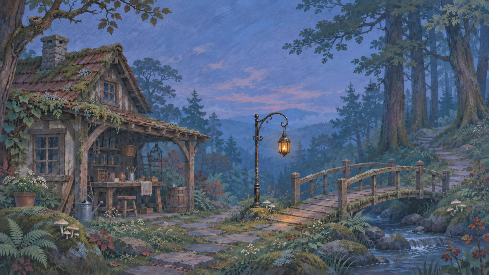

Field Notes / After closing
One street, three working directions: explore a street atlas, compare a contact sheet, or read a continuous journal.
Out of the workshop.
Completed handovers in this visit. Open a record to inspect it or undo.
REPAIR COMPLETE / DELIVERY ON HOLD
The lamp is fixed.
The address isn’t.
Tested, cleaned, ready to go.
Before it leaves the bench
One character makes a difference. Check the customer’s correction before printing the label.
CUSTOMER’S NOTE“Please send it to 18a, not 18. The door is beside the bakery.”
Ready for its next record.
The belt is fitted and playback checked. Mark this job collected when the customer takes it home.
New belt fitted. Speed checked at both settings. Old belt packed with the unit.
A small part. A necessary pause.
The matching replacement switch has not arrived. Keep the radio on the bench until it can be fitted and tested.
The current switch cuts out under load. The repair has not passed its final check.
Unavailable: replacement switch and final test are still needed.
017 / TO DELIVERY
A good repair, properly finished.
017 needs an address decision. Your place on the bench stays here.

A lanternmaker’s evening
Mosslight

There is still a way home.
It just needs a light.
Leave a light for the next traveller
A light for the bridge.
Six pieces of timber. Two drops of resin.
Enough to make the dark a little smaller.
The materials are here. Let’s make something useful.
Your making journal
A light for the bridge
Make → hang → leave the path lit.
The hook is empty. The materials are on your bench.
- Not made yet · costs 6 timber and 2 resin
- Not hung yet · hanging uses no extra materials
This small scene lasts for this visit. Switching gallery examples keeps it; reloading or “Begin again” starts a new evening.
The bridge is lit. The path is open. That is enough for tonight.